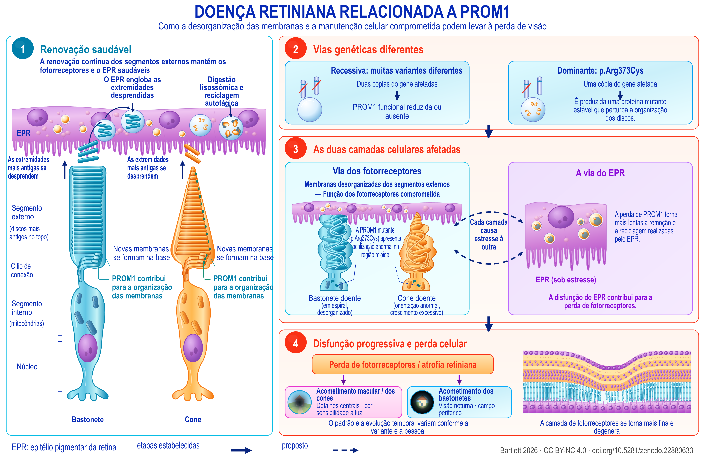

Review
Degeneração retiniana associada a PROM1 (edição em português do Brasil)
Um mapa de evidências sobre mecanismos, intervenções e prioridades de pesquisa que considera as diferenças entre alelos
English title: PROM1-associated retinal degeneration
Working paper, version 1.90, 21 September 2026.
The Zenodo record also holds an accessible HTML edition, a spoken-text version, a description of the figure and an audiobook.
Abstract
A degeneração retiniana associada a PROM1 abrange doença macular dominante e degeneração recessiva dos fotorreceptores, frequentemente mais extensa. Seus padrões distintos de herança e de apresentação clínica levantam questões mecanísticas e terapêuticas diferentes. Esta revisão e mapa de evidências integra genética clínica, história natural, biologia de membranas, modelos de fotorreceptores e do epitélio pigmentar da retina (EPR), intervenções pré-clínicas e registros datados de estudos em seres humanos. O avanço translacional mais sólido é o resgate em sistemas experimentais deficientes em PROM1, demonstrado em organoides derivados de pacientes e em camundongos knockout. Há relatos de benefício após o início da doença em um estudo em camundongos consultado em texto completo e em um resumo de congresso distinto. A principal extrapolação ainda não resolvida é para a doença causada por mutantes dominantes, na qual a adição gênica, a supressão do mutante e o tratamento combinado exigem comparação direta. A literatura mecanística vai além da morfogênese do segmento externo: experimentos diretos no EPR implicam o fluxo autofágico e a remoção de segmentos externos, enquanto modelos knockout sensíveis à luz implicam a endotelina, o fator de crescimento semelhante à insulina 1 (IGF1) e o estresse metabólico. Essas vias exigem interpretação específica de cada compartimento. Os achados de autofluorescência quantitativa em seres humanos limitam uma explicação universal baseada no excesso de bisretinoides, e os efeitos protetores locais da endotelina em outros genótipos de doença retiniana contrariam a ideia de tratar essa via como uniformemente nociva. Os desfechos clínicos são estratificados de forma correspondente: a expansão da atrofia na doença dominante, a contração da zona elipsoide na doença recessiva e o afinamento específico de cada camada na tomografia de coerência óptica (OCT) medem processos diferentes e apresentam efeitos de piso distintos. Estudos em seres humanos com critérios de elegibilidade genética explícitos ou mais amplos podem admitir a doença por PROM1, mas, na maioria deles, os registros mostram quem poderia participar, e não quem participou nem o que ocorreu depois. Sete programas experimentais conectam essas distinções a comparações testáveis, cada um apresentado em termos do contraste decisivo, da precaução metodológica necessária e da decisão que permitiria resolver. O quadro resultante distingue as terapias candidatas por alelo, compartimento e estágio da doença.


Description of the figure
Doença retiniana relacionada a PROM1. Um modelo de trabalho da condição segundo o entendimento atual: a renovação do segmento externo e o que a perturba (1, 2), os dois compartimentos celulares afetados (3) e a perda de visão resultante (4). As linhas tracejadas indicam o que é proposto, e não o que está estabelecido. As evidências para cada elemento estão nas seções 3 a 10.
A figura organiza um modelo de trabalho da doença retiniana relacionada a PROM1 em quatro painéis numerados. À esquerda, o painel 1 mostra um bastonete e um cone saudáveis junto ao epitélio pigmentar da retina (EPR). Novas membranas se formam na base dos segmentos externos, onde PROM1 contribui para sua organização. Os discos mais antigos ficam na extremidade oposta; essas extremidades se desprendem e são englobadas pelo EPR, que realiza digestão lisossômica e reciclagem autofágica. Também estão identificados o cílio de conexão, o segmento interno com mitocôndrias e o núcleo de cada fotorreceptor.
À direita, o painel 2 apresenta duas vias genéticas: a recessiva, com duas cópias afetadas do gene e redução ou ausência de PROM1 funcional, e a dominante p.Arg373Cys, com uma cópia afetada e uma proteína mutante que perturba a organização dos discos. O painel 3 separa a via dos fotorreceptores da via do EPR. Na primeira, as membranas dos segmentos externos estão desorganizadas; o bastonete apresenta uma estrutura em espiral e o cone, orientação anormal e crescimento excessivo. Uma indicação localiza a PROM1 mutante na região mioide. Na via do EPR, a perda de PROM1 torna mais lentas a remoção e a reciclagem. Setas tracejadas em ambas as direções indicam a proposta de que cada camada impõe estresse à outra.
O painel 4 mostra disfunção progressiva, perda de fotorreceptores e atrofia retiniana. O acometimento macular ou dos cones está associado a detalhes centrais, cor e sensibilidade à luz; o acometimento dos bastonetes, à visão noturna e ao campo periférico. Um corte esquemático da retina mostra a camada de fotorreceptores tornando-se mais fina e degenerando. O padrão e a evolução temporal variam conforme a variante e a pessoa. Na legenda gráfica, as setas contínuas indicam etapas estabelecidas e as tracejadas, relações propostas. Esta descrição acompanha o modelo representado na figura, cuja fundamentação é apresentada nas seções 3 a 10 do artigo.
Download the figure (PNG, 5400 × 3600 pixels, CC BY-NC 4.0)
How to cite
Bartlett C. Degeneração retiniana associada a PROM1 (edição em português do Brasil): Um mapa de evidências sobre mecanismos, intervenções e prioridades de pesquisa que considera as diferenças entre alelos. Version 1.90. Zenodo, 21 September 2026. https://doi.org/10.5281/zenodo.22880633